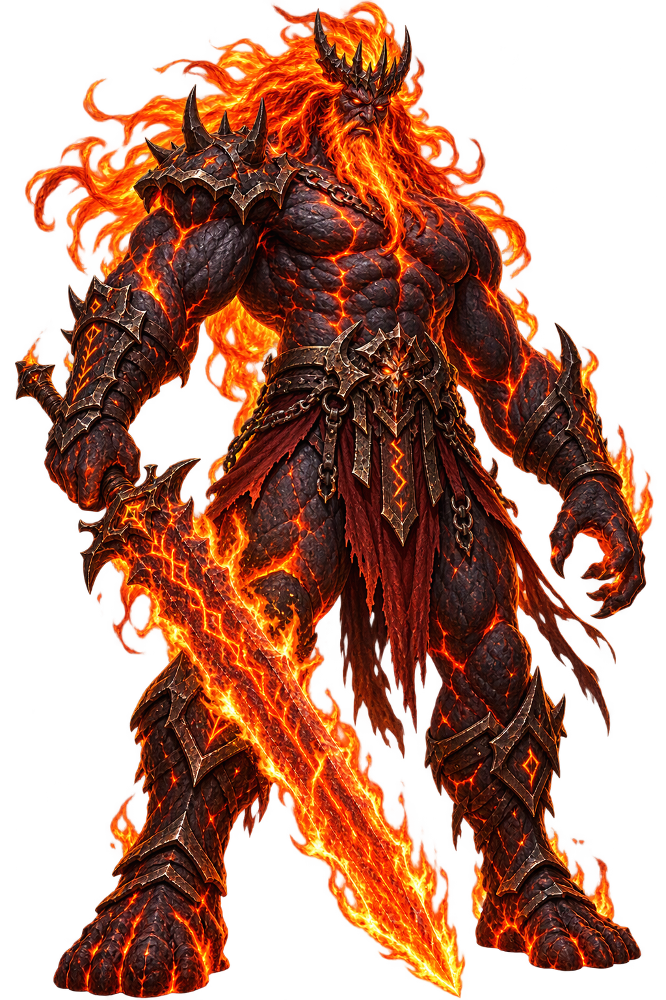
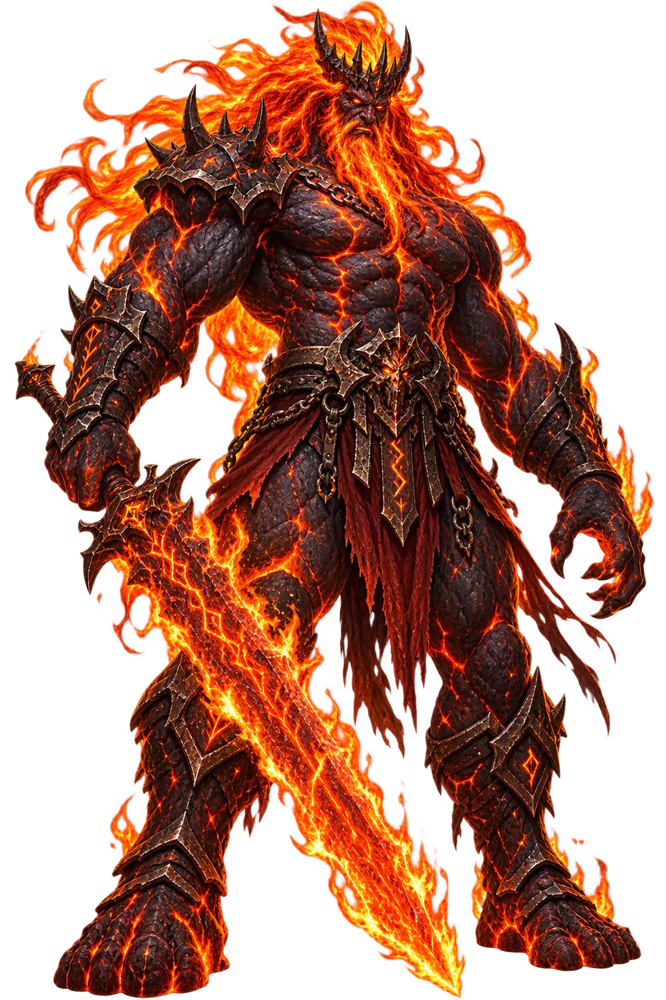

The Cult
No cult of Surtr is recorded — one does not worship the end. But the volcanic placenames and the Völuspá’s recitation tradition keep his name in the North’s mouth; and the modern Ásatrú movement’s Ragnarök-rites address the fire he brings.
Extended Lore
Etymology · Orthography · Cult · Iconography · Reception · Sources

Essential information about Surtr, Fire, Ragnarök, Muspelheim
From original script to Unicode restoration
The name Surtr reaches the modern world through scholarly transliteration of the norse tradition. Because the conventional spelling uses only Latin letters, its Unicode and ASCII forms coincide — the tradition it carries is in the name itself, not in diacritics.
Character-by-character philological analysis
| Character | Unicode | Name | Block | Phonetic Role |
|---|---|---|---|---|
| S | U+0053 | Latin Capital Letter S | Basic Latin | Same |
| u | U+0075 | Latin Small Letter U | Basic Latin | Same |
| r | U+0072 | Latin Small Letter R | Basic Latin | Same |
| t | U+0074 | Latin Small Letter T | Basic Latin | Same |
| r | U+0072 | Latin Small Letter R | Basic Latin | Same |
This restoration reflects fidelity to the attested tradition, not recovered diacritics: every character of Surtr already survives in ASCII. What the restoration preserves is the canonical spelling itself — the form scholarship standardised.
How the sacred was kept — rites, sanctuaries, remains
No cult of Surtr is recorded — one does not worship the end. But the volcanic placenames and the Völuspá’s recitation tradition keep his name in the North’s mouth; and the modern Ásatrú movement’s Ragnarök-rites address the fire he brings.
Surtr’s monuments are volcanic: Iceland’s Surtshellir cave was used from the settlement age, its name the giant’s. The Eddic manuscripts — Codex Regius and its kin — give the words; the island’s lava-fields give the theatre.
How Surtr was imaged across the ages
A giant wreathed in flame, sword raised like a second sun; black against his own fire — the svart one made visible by his blaze. His icon is the burning sword held high at the world’s rim.
The name after its own age — transmission, translation, survival
Comparative eschatology sets him beside the world-fires of Persia and the volcano-gods of the Pacific as the destroyer whose blaze renews; and modern fantasy made his name generic — ‘Surt’ appears in more games and novels than any other Eddic name. The black one has become the genre’s default apocalypse.
Surtr is the Norse eschaton’s Persian fire: comparatists long ago paired him with the Zoroastrian world-fire and the volcanic destroyers of other traditions; and his role — the outsider-god of flame who ends and purifies — reads like a structural cousin of the Vedic Agni pushed to the world’s edge. Wagner’s Loge and Tolkien’s surtur-imagery carried him into modern fantasy as the type of the world-ending fire.
The Völuspá’s ‘sun of the battle-gods’ image remains Norse mythology’s most quoted line of doom; and Surtr is the fantasy genre’s template for the fire-giant — from D&D’s fire giants to video games, his name is the standard label for volcanic end-bosses. Iceland’s volcanic place-names (Surtshellir, the ‘cave of Surtr’) keep him in the landscape itself.
What Surtr means — beyond the dictionary
Surtr: the black one, restored in plain letters that hold no fire and yet smoulder. The lexicon keeps the full Old Norse form — the trilled r, the dropped-nothing spelling — because a world-ending fire deserves an unabbreviated name.
Where Surtr echoes through film, television, and games — and how
Marvel Studios
A comedic cosmic adventure that brings Ragnarok, Surtur, Hela, and the destruction of Asgard into the MCU.
2022Santa Monica Studio
Kratos and Atreus journey through the Nine Realms during Fimbulwinter, confronting figures from Norse apocalyptic myth.
Common questions about Surtr, Fire, Ragnarök, Muspelheim, and Unicode restoration
In reconstructed pronunciation, Surtr is /ˈsurtz/ — approximately “SOOR-tr” — trilled r, both syllables short.
Surtr means Black, the swarthy one in the norse tradition.
Surtr is associated with The Burning Sword (His sword shines brighter than the sun; with it he splits the world-tree’s shelter and sets the sky afire.), Múspellsheimr (His realm of fire, the southernmost of the nine worlds — hot and radiant, guarded for the last battle.), The Doom of Freyr (At Ragnarök he kills Freyr, who lacks his own sword — the gods’ summer falls to the world’s fire.), The Renewer (From his fire the new earth rises green — the destroyer as the price of the world’s rebirth.).
Surtr is written entirely in ASCII letters, so its restoration is about canonical fidelity rather than recovered diacritics: the temple fixes the name in its scholarly standard spelling, attested in the source tradition, instead of leaving it to drift.
“The One from the South” — the Völuspá story that anchors the mythology of Surtr, told in full on the lore page.
The philological foundations of this restoration
Every claim on this page is grounded in established scholarship. The orthographic restorations follow disciplinary convention. The etymological chain follows the best available reference works. This is not invention — it is resurrection through scholarship.
You have traced the name from its earliest attestation to its Unicode restoration. Now return to the myth. The story is where the name lives.
Back to Lore